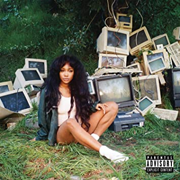
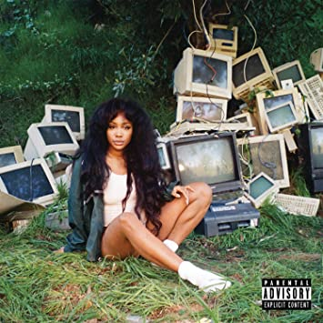
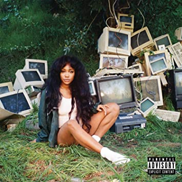

Hey ya'll my name is Maya Johnson(she/her) and I am at rising Senior at Porter-Gaud Highschool in Charleston, South Carolina.I decided to take this class because I want to Major in Computer Science in college at thought this would give me a great prespective of what college life would be like. I love software development and the freedom and creativity that comes with it. Outside of school I love hanging out with my friends, cooking, and have recently got into yoga. I love all things marvel, dystopian and i'm always down to watch a rom-com.
